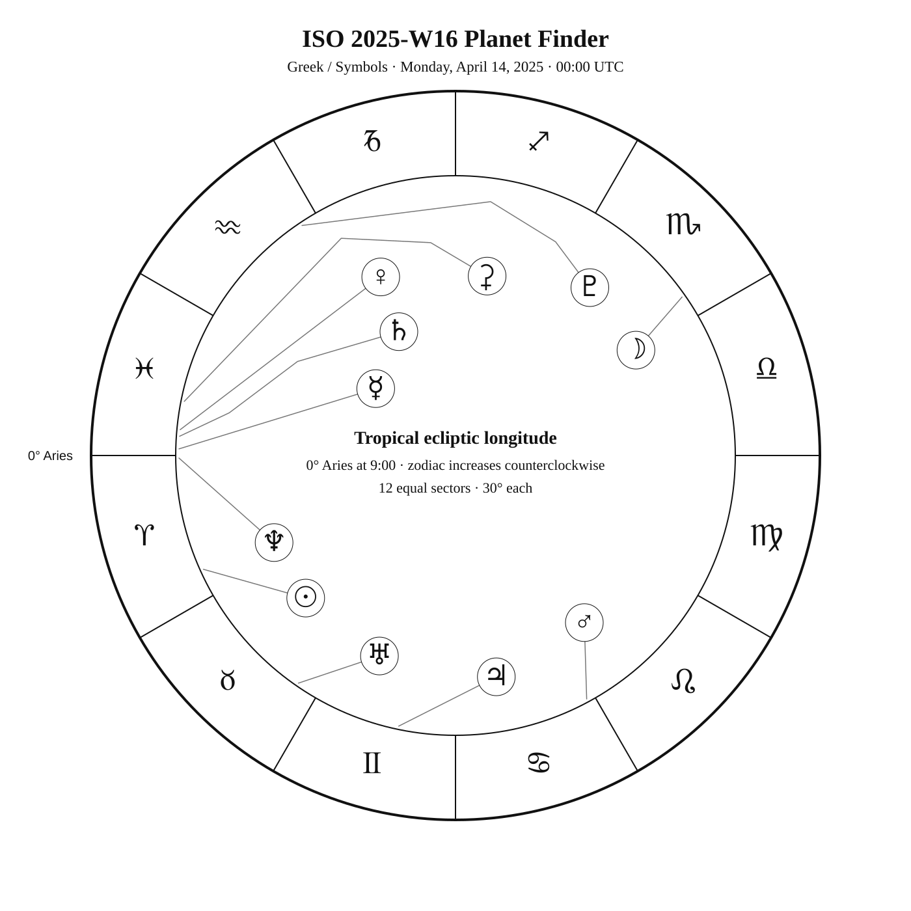
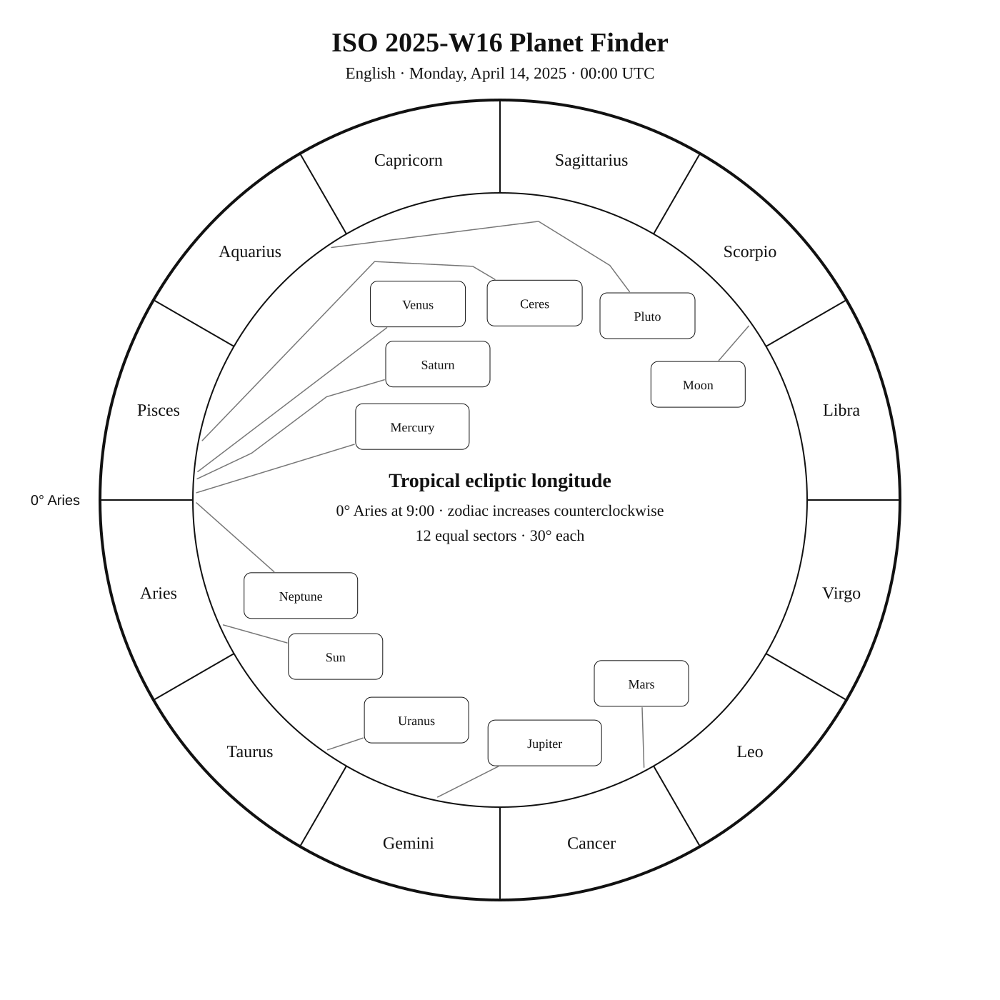
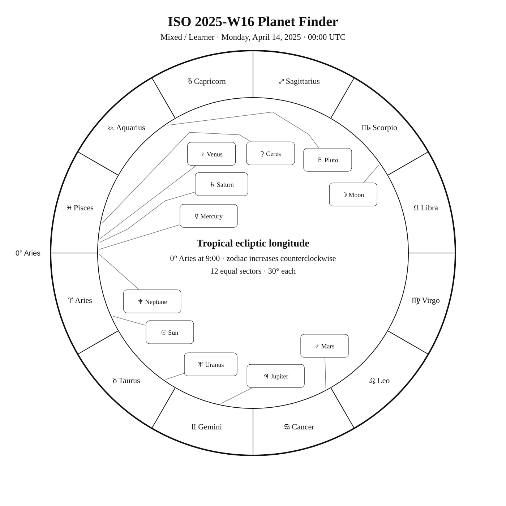

ISO 2025-W16
Week begins: Monday, April 14, 2025
Calendar
| Date | Zodiac day | Events |
|---|---|---|
| Mon, Apr 14, 2025 | ♈ 26 | β Sex —  5 5.1 — Tropical Spring 5 5.1 — Tropical Spring |
| Tue, Apr 15, 2025 | ♈ 27 | |
| Wed, Apr 16, 2025 | ♈ 28 | |
| Thu, Apr 17, 2025 | ♈ 29 | |
| Fri, Apr 18, 2025 | ♈ 30 | C102 / IC 2602 · Theta Carinae Cluster —  2 1.9 — Southern Spring 2 1.9 — Southern SpringFinest NGC 52 / NGC 3344 · MCG 4-25-46 — 11 10.5 — Northern SpringC92 / NGC 3372 · Carina Nebula — 6 6.2 — Southern SpringM95 — 10 9.7 — Tropical SpringEta Carinae (η Carinae) —  — Southern Spring — Southern Spring |
| Sat, Apr 19, 2025 | ♉ 1 | ♉ Sun enters Taurus — 19:56:01 UTC M96 — 9 9.2 — Tropical SpringM105 — 9 9.3 — Tropical SpringFinest NGC 55 / NGC 3384 · MCG 2-28-12 — 11 10.9 — Tropical Spring |
| Sun, Apr 20, 2025 | ♉ 2 | Finest NGC 53 / NGC 3432 · Arp 206 — 12 11.6 — Northern Spring |
Weekly Solar-System Ephemeris
Snapshot: Week begins April 14, 2025, 00:00 UTC.
(-90° to +90°; defaults +45°, 21:00 LAT)
| Body | ☉︎ | ☽︎ | ☿︎ | ♀︎ | ♂︎ | ♃︎ | ♄︎ |
|---|---|---|---|---|---|---|---|
| Ecliptic | ♈︎ 24°18′ β −0°00′ | ♏︎ 4°59′ β −3°12′ | ♓︎ 28°38′ β −1°28′ | ♓︎ 24°39′ β +4°26′ | ♋︎ 28°19′ β +2°21′ | ♊︎ 18°09′ β −0°17′ | ♓︎ 26°01′ β −1°58′ |
| Observing |  | -12.3 | 0.8 | -4.7 | 0.7 | -2.0 | 1.2 |
| Rise | 05:17 | 19:40 | 04:32 | 03:53 | 10:50 | 07:56 | 04:29 |
| Set | 18:43 | 05:33 | 16:22 | 16:14 | 02:17 | 23:21 | 16:08 |
Extended targets:
| Body | ⚳︎ | ♅︎ | ♆︎ | ♇︎ |
|---|---|---|---|---|
| Ecliptic | ♓︎ 18°43′ β −8°14′ | ♉︎ 25°24′ β −0°13′ | ♈︎ 0°32′ β −1°16′ | ♒︎ 3°43′ β −3°29′ |
| Observing | 9.3 | 5.8 | 7.8 | 14.5 |
| Rise | 04:48 | 06:39 | 04:35 | 02:33 |
| Set | 15:15 | 21:26 | 16:33 | 11:22 |
β = ecliptic latitude (+ north, − south).
Rise and set are Local Apparent Time for the selected latitude.
Naked-eye observing uses the Sun’s altitude at the selected Monday observer time: Daylight (Sun ≥ −0.833°), Civil twilight (−0.833° to −6°), Nautical twilight (−6° to −12°), Astronomical twilight (−12° to −18°), and Night (below −18°).
Solar Glare identifies a body too close to the Sun when the sky-state rule does not already supersede its naked-eye classification.
The Sun’s observing status uses this same five-state sky classification.
Planet Finder



Sky Notes
Kilroy: Sky Notes · generated 2026-10-23 07:52:40 UTC
ISO 2025-W16 runs from April 14 through April 20. Venus and Saturn are separated by about 1.4° in geocentric ecliptic longitude at the Monday 00:00 UTC snapshot. Mercury and Neptune are separated by about 1.9° in geocentric ecliptic longitude at the Monday 00:00 UTC snapshot.


Naked eye: No principal lunar phase is listed this week. Check the Moon's position each night and favor darker hours for low-contrast targets. No fixed-sky Calendar object is classified for naked-eye observing this week.

Planets: Moon: Naked eye; magnitude -12.3; direct motion; 99.1% illuminated. Monday 00:00 UTC snapshot. Mercury: Naked eye; magnitude 0.8; direct motion; 32.4% illuminated. Below the horizon at 21:00 local apparent solar time, 45°N. Monday 00:00 UTC snapshot. Conjunction with Neptune in ecliptic longitude Apr 17 04:11 UTC. Venus: Naked eye; magnitude -4.7; direct motion; 13.9% illuminated. Below the horizon at 21:00 local apparent solar time, 45°N. Monday 00:00 UTC snapshot. Mars: Naked eye; magnitude 0.7; direct motion; 90.0% illuminated. Monday 00:00 UTC snapshot. Ceres: Telescope; magnitude 9.3; direct motion; 99.0% illuminated. Below the horizon at 21:00 local apparent solar time, 45°N. Monday 00:00 UTC snapshot. Jupiter: Naked eye; magnitude -2.0; direct motion; 99.4% illuminated. Monday 00:00 UTC snapshot. Saturn: Naked eye; magnitude 1.2; direct motion; 99.9% illuminated. Below the horizon at 21:00 local apparent solar time, 45°N. Monday 00:00 UTC snapshot. Uranus: Binoculars; magnitude 5.8; direct motion; 100.0% illuminated. Monday 00:00 UTC snapshot. Neptune: Telescope; magnitude 7.8; direct motion; 100.0% illuminated. Below the horizon at 21:00 local apparent solar time, 45°N. Monday 00:00 UTC snapshot. Conjunction with Mercury in ecliptic longitude Apr 17 04:11 UTC. Pluto: Substantial telescope; magnitude 14.5; direct motion; 100.0% illuminated. Below the horizon at 21:00 local apparent solar time, 45°N. Monday 00:00 UTC snapshot.


Binoculars: Trace Sextans’s charted figure in the finder, then identify β Sex at its charted position.
Small telescope: Theta Carinae Cluster: consult its dedicated finder and observing story for equipment guidance; MCG 4-25-46: consult its dedicated finder and observing story for equipment guidance; Carina Nebula: consult its dedicated finder and observing story for equipment guidance; M95: consult its dedicated finder and observing story for equipment guidance; M96: consult its dedicated finder and observing story for equipment guidance; M105: consult its dedicated finder and observing story for equipment guidance; MCG 2-28-12: consult its dedicated finder and observing story for equipment guidance; Arp 206: consult its dedicated finder and observing story for equipment guidance
Substantial telescope: No fixed-sky Calendar object is classified as requiring a substantial telescope this week.
Other objects listed this week: None
Mercury
Mercury: naked eye at the Monday 00:00 UTC snapshot. At 45°N and 21:00 local apparent solar time, it is 42.9° below the horizon. Rises 04:32; sets 16:22 (45°N, local apparent solar time). Visual magnitude 0.8. The disk is 32.4% illuminated (crescent). It is 25.7° from the Sun, on its west side. Motion is direct at 0.528° per day in ecliptic longitude at the snapshot. Position reference: Fumalsamakah, 14.3° away. Saturn is 2.7° away at the snapshot. Neptune is 1.9° away at the snapshot. Conjunction with Neptune in ecliptic longitude Apr 17 04:11 UTC. Mercury: 14.3° from Fumalsamakah in the Pathfinder.
Venus
Venus: naked eye at the Monday 00:00 UTC snapshot. At 45°N and 21:00 local apparent solar time, it is 41.1° below the horizon. Rises 03:53; sets 16:14 (45°N, local apparent solar time). Visual magnitude -4.7. The disk is 13.9% illuminated (crescent). It is 30.0° from the Sun, on its west side. Motion is direct at 0.038° per day in ecliptic longitude at the snapshot. Position reference: Fumalsamakah, 7.3° away. Venus: 7.3° from Fumalsamakah in the Pathfinder.
Moon
Moon: naked eye at the Monday 00:00 UTC snapshot. At 45°N and 21:00 local apparent solar time, it is 11.7° above the horizon. Rises 19:40; sets 05:33 (45°N, local apparent solar time). Visual magnitude -12.3. The disk is 99.1% illuminated (waning nearly full). It is 168.9° from the Sun, on its west side. Motion is direct at 11.826° per day in ecliptic longitude at the snapshot. Position reference: Spica, 10.8° away. Moon: 10.8° from Spica in the Pathfinder.
Mars
Mars: naked eye at the Monday 00:00 UTC snapshot. At 45°N and 21:00 local apparent solar time, it is 52.9° above the horizon. Rises 10:50; sets 02:17 (45°N, local apparent solar time). Visual magnitude 0.7. The disk is 90.0% illuminated (gibbous). It is 94.0° from the Sun, on its east side. Motion is direct at 0.394° per day in ecliptic longitude at the snapshot. Position reference: Pollux, 6.4° away. Mars: 6.4° from Pollux in the Pathfinder.
Jupiter
Jupiter: naked eye at the Monday 00:00 UTC snapshot. At 45°N and 21:00 local apparent solar time, it is 22.4° above the horizon. Rises 07:56; sets 23:21 (45°N, local apparent solar time). Visual magnitude -2.0. The disk is 99.4% illuminated (nearly full). It is 53.8° from the Sun, on its east side. Motion is direct at 0.178° per day in ecliptic longitude at the snapshot. Position reference: Elnath, 7.4° away. Jupiter: 7.4° from Elnath in the Pathfinder.
Saturn
Saturn: naked eye at the Monday 00:00 UTC snapshot. At 45°N and 21:00 local apparent solar time, it is 45.1° below the horizon. Rises 04:29; sets 16:08 (45°N, local apparent solar time). Visual magnitude 1.2. The disk is 99.9% illuminated (nearly full). It is 28.3° from the Sun, on its west side. Motion is direct at 0.114° per day in ecliptic longitude at the snapshot. Position reference: Fumalsamakah, 13.1° away. Mercury is 2.7° away at the snapshot. Neptune is 4.6° away at the snapshot. Saturn: 13.1° from Fumalsamakah in the Pathfinder.
Uranus
Uranus: binoculars at the Monday 00:00 UTC snapshot. At 45°N and 21:00 local apparent solar time, it is 3.5° above the horizon. Rises 06:39; sets 21:26 (45°N, local apparent solar time). Visual magnitude 5.8. The disk is 100.0% illuminated (nearly full). It is 31.1° from the Sun, on its east side. Motion is direct at 0.052° per day in ecliptic longitude at the snapshot. Position reference: Aldebaran, 15.6° away. Uranus: 15.6° from Aldebaran in the Pathfinder.
Neptune
Neptune: telescope at the Monday 00:00 UTC snapshot. At 45°N and 21:00 local apparent solar time, it is 41.4° below the horizon. Rises 04:35; sets 16:33 (45°N, local apparent solar time). Visual magnitude 7.8. The disk is 100.0% illuminated (nearly full). It is 23.8° from the Sun, on its west side. Motion is direct at 0.035° per day in ecliptic longitude at the snapshot. Position reference: Fumalsamakah, 15.5° away. Mercury is 1.9° away at the snapshot. Saturn is 4.6° away at the snapshot. Conjunction with Mercury in ecliptic longitude Apr 17 04:11 UTC. Neptune: 15.5° from Fumalsamakah in the Pathfinder.
Ceres
Ceres: telescope at the Monday 00:00 UTC snapshot. At 45°N and 21:00 local apparent solar time, it is 54.6° below the horizon. Rises 04:48; sets 15:15 (45°N, local apparent solar time). Visual magnitude 9.3. The disk is 99.0% illuminated (nearly full). It is 36.4° from the Sun, on its west side. Motion is direct at 0.364° per day in ecliptic longitude at the snapshot. Position reference: Fumalsamakah, 17.3° away. Ceres: 17.3° from Fumalsamakah in the Pathfinder.
Pluto
Pluto: substantial telescope at the Monday 00:00 UTC snapshot. At 45°N and 21:00 local apparent solar time, it is 56.6° below the horizon. Rises 02:33; sets 11:22 (45°N, local apparent solar time). Visual magnitude 14.5. The disk is 100.0% illuminated (nearly full). It is 80.6° from the Sun, on its west side. Motion is direct at 0.010° per day in ecliptic longitude at the snapshot. Position reference: Dabih, 8.1° away. Pluto: 8.1° from Dabih in the Pathfinder.
Highlights
Mercury
Naked eye; magnitude 0.8; direct motion; 32.4% illuminated. Below the horizon at 21:00 local apparent solar time, 45°N. Monday 00:00 UTC snapshot. Conjunction with Neptune in ecliptic longitude Apr 17 04:11 UTC. Mercury: 14.3° from Fumalsamakah in the Pathfinder.
Venus
Naked eye; magnitude -4.7; direct motion; 13.9% illuminated. Below the horizon at 21:00 local apparent solar time, 45°N. Monday 00:00 UTC snapshot. Venus: 7.3° from Fumalsamakah in the Pathfinder.
Moon
Naked eye; magnitude -12.3; direct motion; 99.1% illuminated. Monday 00:00 UTC snapshot. Moon: 10.8° from Spica in the Pathfinder.
Mars
Naked eye; magnitude 0.7; direct motion; 90.0% illuminated. Monday 00:00 UTC snapshot. Mars: 6.4° from Pollux in the Pathfinder.
Jupiter
Naked eye; magnitude -2.0; direct motion; 99.4% illuminated. Monday 00:00 UTC snapshot. Jupiter: 7.4° from Elnath in the Pathfinder.
Saturn
Naked eye; magnitude 1.2; direct motion; 99.9% illuminated. Below the horizon at 21:00 local apparent solar time, 45°N. Monday 00:00 UTC snapshot. Saturn: 13.1° from Fumalsamakah in the Pathfinder.
Uranus
Binoculars; magnitude 5.8; direct motion; 100.0% illuminated. Monday 00:00 UTC snapshot. Uranus: 15.6° from Aldebaran in the Pathfinder.
Neptune
Telescope; magnitude 7.8; direct motion; 100.0% illuminated. Below the horizon at 21:00 local apparent solar time, 45°N. Monday 00:00 UTC snapshot. Conjunction with Mercury in ecliptic longitude Apr 17 04:11 UTC. Neptune: 15.5° from Fumalsamakah in the Pathfinder.
Ceres
Telescope; magnitude 9.3; direct motion; 99.0% illuminated. Below the horizon at 21:00 local apparent solar time, 45°N. Monday 00:00 UTC snapshot. Ceres: 17.3° from Fumalsamakah in the Pathfinder.
Pluto
Substantial telescope; magnitude 14.5; direct motion; 100.0% illuminated. Below the horizon at 21:00 local apparent solar time, 45°N. Monday 00:00 UTC snapshot. Pluto: 8.1° from Dabih in the Pathfinder.